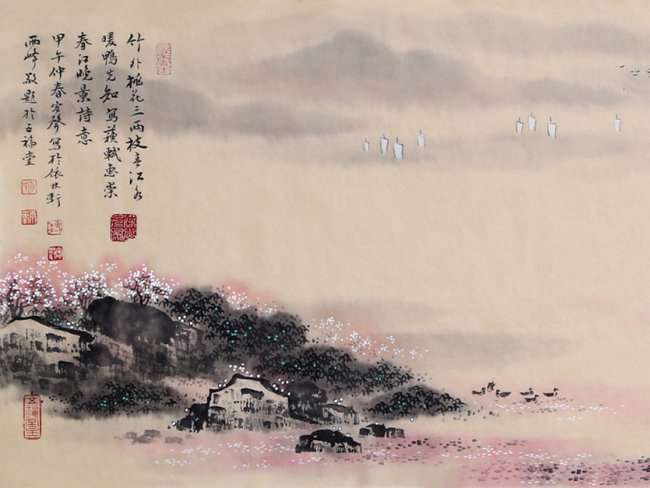
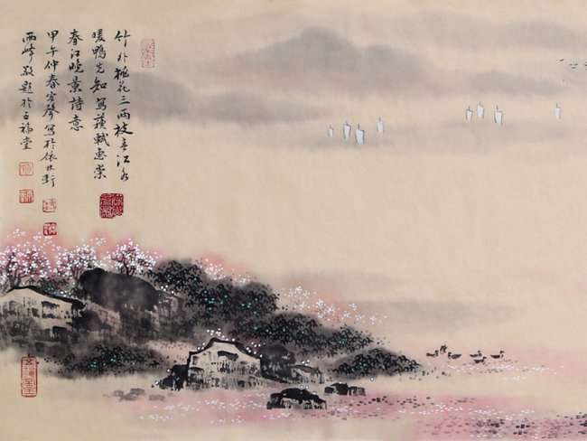

"竹外桃花三两枝，春江水暖鸭先知。蒌蒿满地芦芽短，正是河豚欲上时。" 惠崇春江晚景是元丰八年（1085）苏轼在逗留江阴期间，为惠崇所绘的鸭戏图而作的题画诗。苏轼的题画诗内容丰富，取材广泛，遍及人物、山水、鸟兽、花卉、木石及宗教故事等众多方面。这些作品鲜明地体现了苏轼雄健豪放、清新明快的艺术风格，显示了苏轼灵活自如地驾驭诗画艺术规律的高超才能。而这首《惠崇<春江晚景>》历来被看作苏轼题画诗的代表作。


 
